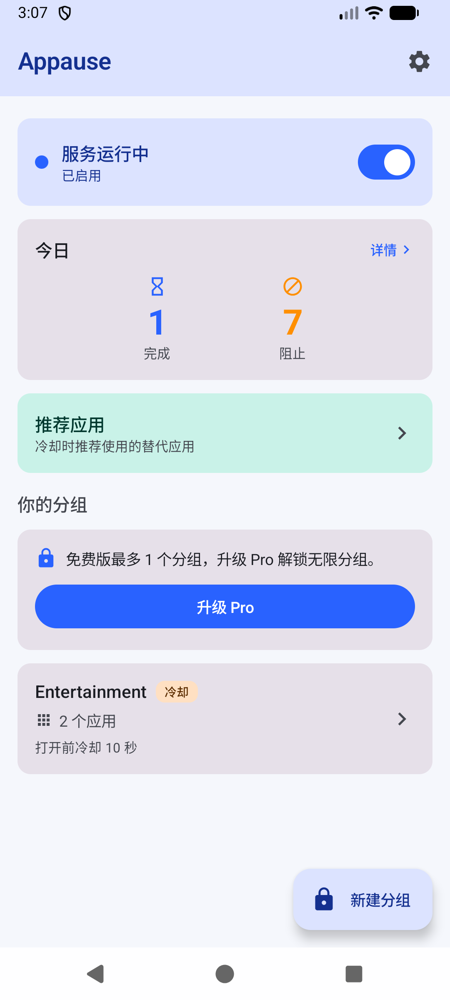
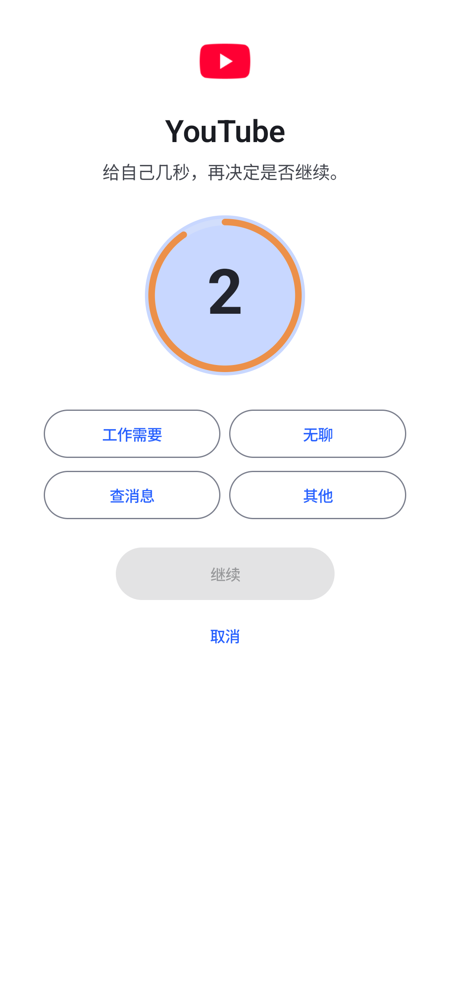
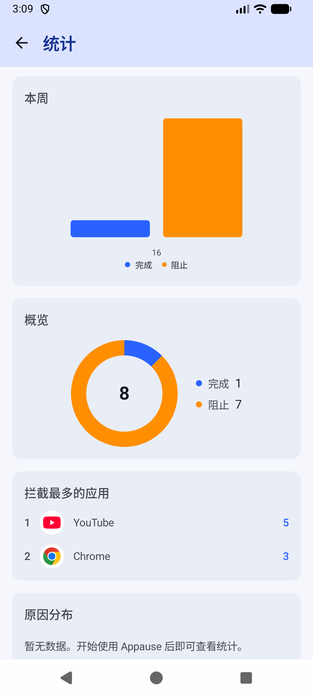

刷手机常常不是决定，是条件反射。Appause 在你点开分心应用的那一瞬间插进一块暂停屏：倒计时几秒，问一句"为什么打开"。很多时候，停一下，你就不想刷了。



功能
打开被管理应用前先等几秒。倒计时结束或点"继续"才能进入——主动权还在你手里。
继续之前选一个理由：工作、无聊、看消息。随手记下，一周后看看自己都在"为什么"打开。
按取消直接回桌面。打开行为被中断，而不是被记账了事。
确实有急事？给这个应用 5/15/30 分钟的通行证，到期自动恢复管理。
暂停屏上显示你配置的替代应用——想刷的时候，先看看有没有更有价值的选择。
今天完成/放弃了几次、7 天和 365 天的趋势图。改变从看得见开始。
隐私
没有账号体系，下载即用。
所有记录只存在你的手机里。没有统计 SDK，没有崩溃上报。
无障碍服务只读取"前台应用的包名"，从不读取屏幕内容，配置里也明确关闭了内容权限。
关于无障碍权限，说实话：Appause 需要无障碍服务才能知道"你打开了哪个应用"。这是一个辅助功能用途，不是监控工具——我们只看包名，而且应用完全开源，你可以随时审查它到底做了什么。
下载